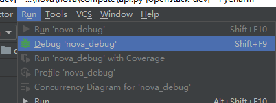
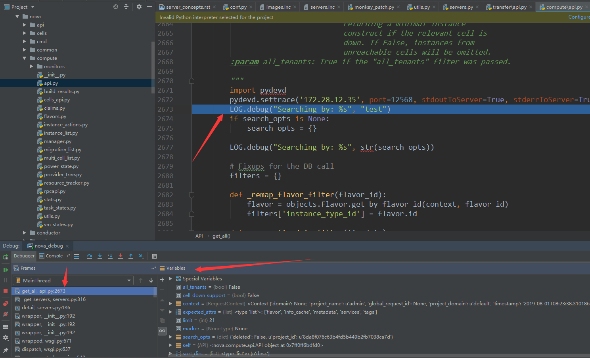

1. 利用kolla远程调试openstack¶
Tip
本文介绍在window环境下通过pycharm远程调试kolla 安装的openstack
1.1. 环境说明¶
本地是window 10
远程调试工具：PyCharm 2018.2.1 (Professional Edition)
openstack环境是通过kolla
openstack版本：stein
1.2. 基本原理¶
python中远程调试有多种方式。本文采用比较常用的pydev插件来实现，pycharm 提供了pydevd的模块,
该模块在pycharm的安装目录的
debug-eggs
目录中有两个文件：
pycharm-debug.egg 该文件python2中使用
pycharm-debug-py3k.egg 该文件python3 中使用
利用PyCharm进行远程调试的过程中，本地的Pycharm充当服务端（Server）的角色，而远程的应用程序充当客户端角色 因此在进行远程调试中，需要进行大致如下几步
Pycharm中启动Debug Server服务监听客户端连接
在远程应用程序端设置断点（通过调用
pydevd.settrace方法）在ui或者cli中访问远程应用程序
远程应用程序在执行到断点位置时与本地的PyCharm Debug Server 建立连接，连接建立后，便可在IDE中对远程计算机中的程序进行单步调试。
1.3. 配置方法¶
1.3.1. kolla 安装openstack debug环境¶
略，这里不再详述，请参考 kolla 开发环境部署
Tip
我们通过使用kolla 安装openstack，并开启了 kolla_debug_mode: true
以下是openstack环境中的global.yml配置
kolla_base_distro: "centos"
kolla_install_type: "source"
openstack_release: "stein"
kolla_internal_vip_address: "10.199.32.101"
network_interface: "em1"
neutron_external_interface: "em2"
enable_cinder: "yes"
glance_backend_ceph: "yes"
cinder_backend_ceph: "yes"
nova_backend_ceph: "yes"
kolla_dev_repos_directory: "/opt/stack/"
kolla_dev_repos_git: "http://git.trystack.cn/openstack"
kolla_dev_repos_pull: "yes"
kolla_dev_mode: "yes"
kolla_source_version: "stable/stein"\
enable_haproxy: "no"
enable_trove: "yes"
这样，容器中的openstack源代码会挂载到宿主机中的 ``/opt/stack`` 目录下
[root@localhost stack]# tree -L 1 /opt/stack/
/opt/stack/
├── cinder
├── glance
├── heat
├── horizon
├── keystone
├── murano-dashboard
├── neutron
├── nova
├── placement
└── trove
10 directories, 0 files
1.3.2. 配置Pycharm¶
在Pycharm中配置远程代码目录与本地代码映射
在PyCharm 中选择
tools ->Deployment ->Configuration,如下图所示：
- 添加一个远程代码与本地代码的映射路径（注意我们本地代码路径是空目录，可以直接从远程
将代码下载到本地）
将远程代码下载到本地
设置自动提交，这样我们本地修改后，自动同步远程目录
在本地开发环境的pycharm中配置debug Server,并启动
在PyCharm 中选择
run ->Edit Configuration,添加一个Python Remote Debug如下图所示：
Important
这里的 path mappings 中的远程地址一定要填写容器中的真实路径
/var/lib/kolla/venv/lib/python2.7/site-packages/nova，而不是挂载在宿主机中的
/opt/stack 目录
启动debug Server 选择
run -> nova_debug
启动完成后，console中显示：
Starting debug server at port 12568 Use the following code to connect to the debugger: import pydevd pydevd.settrace('172.28.12.35', port=12568, stdoutToServer=True, stderrToServer=True) Waiting for process connection...
登入到远程openstack服务器，安装pydev模块
我们调试nova api模块，因此进入nova_api容器中安装 pycharm-debug.egg
将本地的pycharm-debug.egg 文件上传到远程的/opt/stack/nova/nova目录下
[root@localhost nova]# ll /opt/stack/nova/nova/pycharm-debug.egg
-rw-r--r--. 1 root root 988576 Aug 1 11:23 /opt/stack/nova/nova/pycharm-debug.egg
登入到容器中安装pycharm-debug.egg
docker exec -it -u 0 nova_api bash
cd /var/lib/kolla/venv/lib/python2.7/site-packages/nova
easy_install pycharm-debug.egg
在nova/commpute/api.py 中的get_all 方法中加入断点
:linenos:
def get_all(self, context, search_opts=None, limit=None, marker=None,
expected_attrs=None, sort_keys=None, sort_dirs=None,
cell_down_support=False, all_tenants=False):
"""Get all instances filtered by one of the given parameters.
If there is no filter and the context is an admin, it will retrieve
all instances in the system.
Deleted instances will be returned by default, unless there is a
search option that says otherwise.
The results will be sorted based on the list of sort keys in the
'sort_keys' parameter (first value is primary sort key, second value is
secondary sort ket, etc.). For each sort key, the associated sort
direction is based on the list of sort directions in the 'sort_dirs'
parameter.
:param cell_down_support: True if the API (and caller) support
returning a minimal instance
construct if the relevant cell is
down. If False, instances from
unreachable cells will be omitted.
:param all_tenants: True if the "all_tenants" filter was passed.
"""
import pydevd
pydevd.settrace('172.28.12.35', port=12568, stdoutToServer=True, stderrToServer=True)
LOG.debug("Searching by: %s", "test")
if search_opts is None:
search_opts = {}
Tip
import pydevd pydevd.settrace(‘172.28.12.35’, port=12568, stdoutToServer=True, stderrToServer=True) 表示在此处进行断点
通过web ui或者命令行查看实例列表 。进入单步调试模式

Important
若用了monkey_patch的话，记得将thread设置成Flase, eventlet.monkey_patch(os=False, thread=False)
比如调试nova 则在nova目录下的 monkey_patch.py 中将
eventlet.monkey_patch() 改为 eventlet.monkey_patch(thread=False)